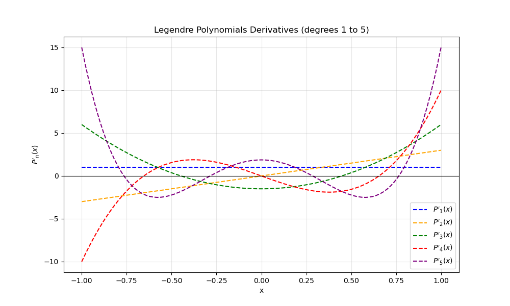

Exercise 18.4#
Q1 & Q2: Implementation of AutoDiff Class. Overall Process.#
Extended the provided
autodiff.hpplibrary to include additional useful operators. Specifically, subtraction (operator-), negative sign operator and division (operator/) by applying the quotient rule.Added some more mathematical functions like
cos,expandlogthat acceptAutoDiffvariables and computed correctly its derivatives by implementing the chain rule.Verified the correctness of these new operators using
demo_autodiff_new.cpp.
Q3: Legendre- Polynomials. Overall process.#
Implemented the recursive formula to compute Legendre-polynomials. Since our
AutoDiffclass supports templates, the same function calculates both values and derivatives:P[k] = ((T(2 * k - 1) * x * P[k - 1]) - T(k - 1) * P[k - 2]) / T(k);
Created
test_legendre.cppto generate data (with step 0.02) for Legendre-polynomials up to order \(n=5\) in the interval \([-1, 1]\).Created the python script
plot_combined.pyto visualize the family of polynomials and their derivatives.
Q3: Plots#
Plot 1: Legendre-Polynomials (Orders 0 to 5)#

Plot 2: Legendre-Polynomials Derivatives (Orders 1 to 5)#
Note: Derivative of the Polynomial or order 0 is not shown because its value is 0, so plotting it would make the graphic much smaller to show that horizontal line at 0 making it difficult to see the other polynomials derivative values.

Q3: Conclusion#
As seen in Plot 1, all polynomials strictly satisfy the theoretical condition \(P_n(1) = 1\), confirming the numerical stability of the recursive implementation.
Parity and Symmetry: The plots show the parity properties of Legendre-polynomials:
Even orders (\(P_0, P_2, P_4\)) are symmetric about the Y-axis (even functions).
Odd orders (\(P_1, P_3, P_5\)) are antisymmetric (odd functions), satisfying \(P_n(-1) = -1\).
Derivative Behavior: Plot 2 shows that derivatives oscillate with increasing amplitude near the boundaries. For the order 5 polynomial, the derivative at \(x=1\) take the value 15 which is the theoretical prediction \(P'_n(1) = \frac{n(n+1)}{2}\).
The derivative inverts the parity: for an even polynomial, \(P'_n\) becomes an odd function (crossing zero at the origin) and vice versa.